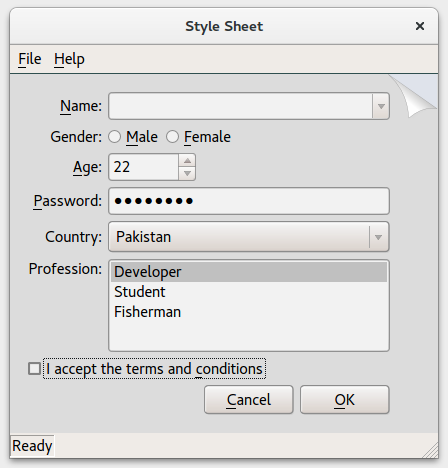

Style Sheet Example
The Style Sheet Example shows how to use style sheets.

Screen Shot of the Pagefold style sheet
The Style Sheet example shows how widgets can be styled using Qt Style Sheets. You can open the style editor by selecting File > Edit Style Sheet, to select an existing style sheet or design your own style and load it.
The Style Sheet example consists of 2 classes:
MainWindowStyleSheetEditor
MainWindow Class
MainWindow inherits QWidget, and is the application's main window defined in mainwindow.ui. The style of MainWindow can be modified with StyleSheetEditor.
StyleSheetEditor Class
StyleSheetEditor enables you to open an editor where you can load an existing style sheet. It is also possible to define a new stylesheet and load it. Its layout is defined in stylesheeteditor.ui.
void StyleSheetEditor::on_styleCombo_activated(const QString &styleName)
Sets the specified styleName and grays the applyButton.
void StyleSheetEditor::on_styleSheetCombo_activated(const QString &sheetName)
Loads the stylesheet from styleSheetName.
void StyleSheetEditor::on_styleTextEdit_textChanged()
Enables the applyButton when the text in the buffer has changed.
void StyleSheetEditor::on_applyButton_clicked()
Sets the stylesheet properties in qApp and disables the applyButton.
void StyleSheetEditor::loadStyleSheet(const QString &sheetName)
Loads the specified sheetName, and sets its properties in qApp.